Göksun / Kahramanmaraş · 2007'den Beri
Hafriyat, kaya kırıcı, dolgu, temel açma ve bina yıkım işlerinde; deneyimli 20 kişilik ekibimiz ve modern makine parkımızla sahada güvenle çalışıyoruz.
Hizmetlerimiz
Hafriyattan altyapıya, arazi düzenlemeden yıkıma kadar; her projede planlı, güvenli ve zamanında çalışıyoruz.
Yüzeysel ve derin kazı, temel açma, arazi tesviyesi — her ölçekteki projede deneyimli ekip ve doğru ekipman.
Sert zemin ve kayalık arazilerde hidrolik kırıcı ekipmanlarımızla kazı ve yol açma çalışmaları.
Zemin dolgusu, kanal dolgusu ve sıkıştırma işlerinde standartlara uygun, kalıcı çözümler.
Kontrollü ve güvenli bina yıkım işleri; moloz kaldırma ve saha temizliği dahil eksiksiz hizmet.
Kendi kamyon filomuzla hafriyat malzemesi, kum, çakıl ve dolgu malzemesi taşımacılığı.
Dağlık ve zorlu arazilerde yol açma, altyapı kazısı ve arazi düzenleme çalışmaları.
Yukarıdaki kalemlerin dışında kalan tüm hafriyat ihtiyaçlarınız için tek adres.
İstinat duvarı, bahçe çevresi ve peyzaj taş duvarlarında usta işçiliği — hem dayanıklı hem de görsel olarak etkileyici çözümler.
Yeni Hizmetimiz
İstinat duvarından bahçe çevresine, dekoratif cephelerden taş kameriyelere kadar; elde işlenen her taş, kalıcı bir eser bırakıyor.
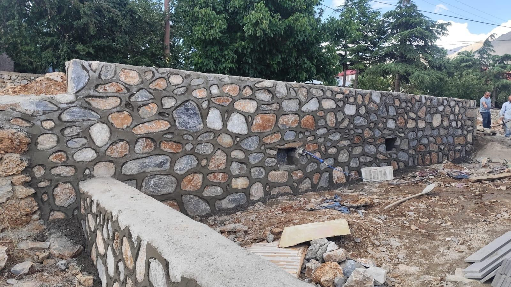
Köy Sınırında Uzanan Duvar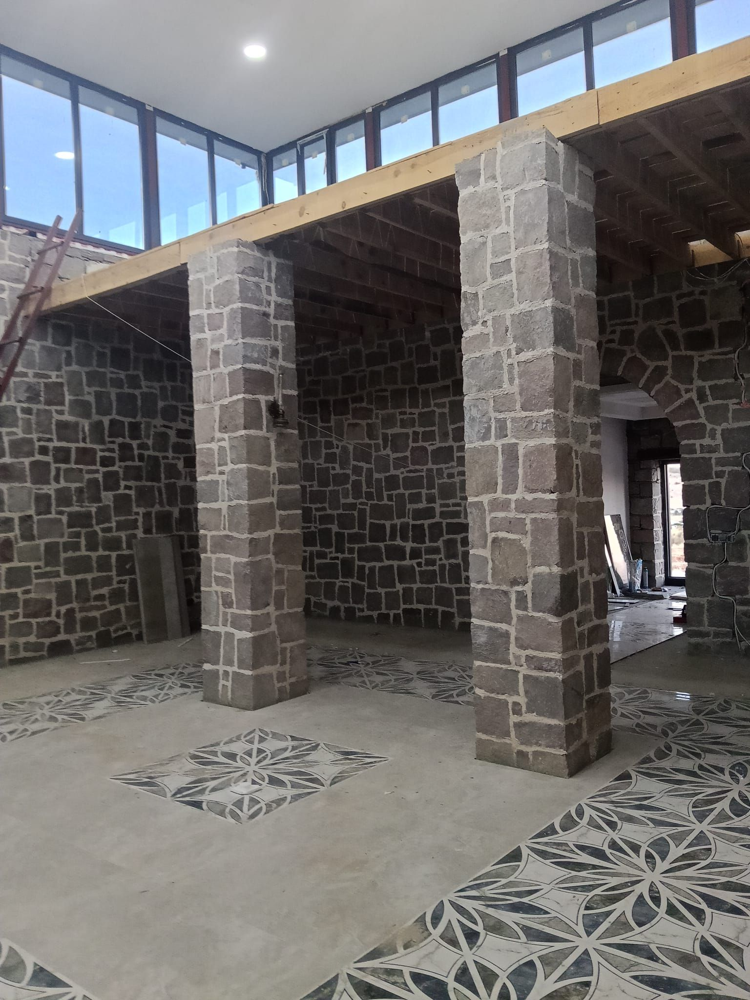
Taş Sütunlu Kameriye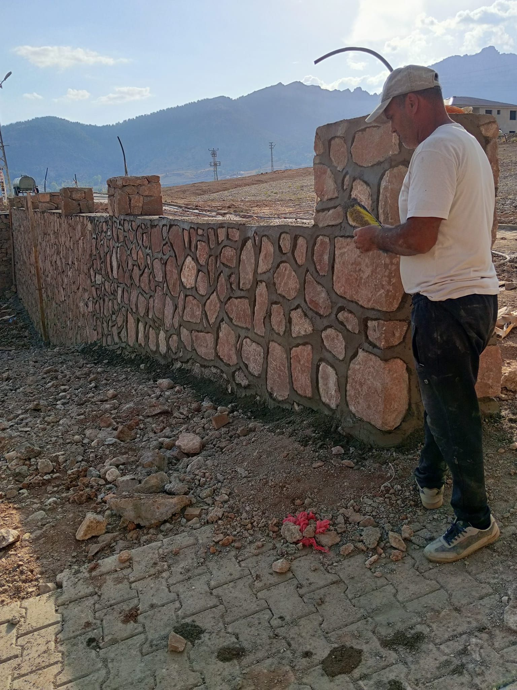
Ustanın Elinden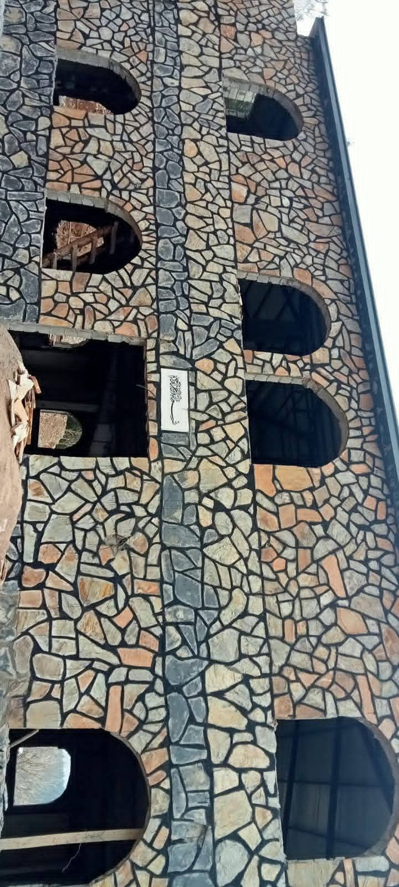
Dekoratif İşçilik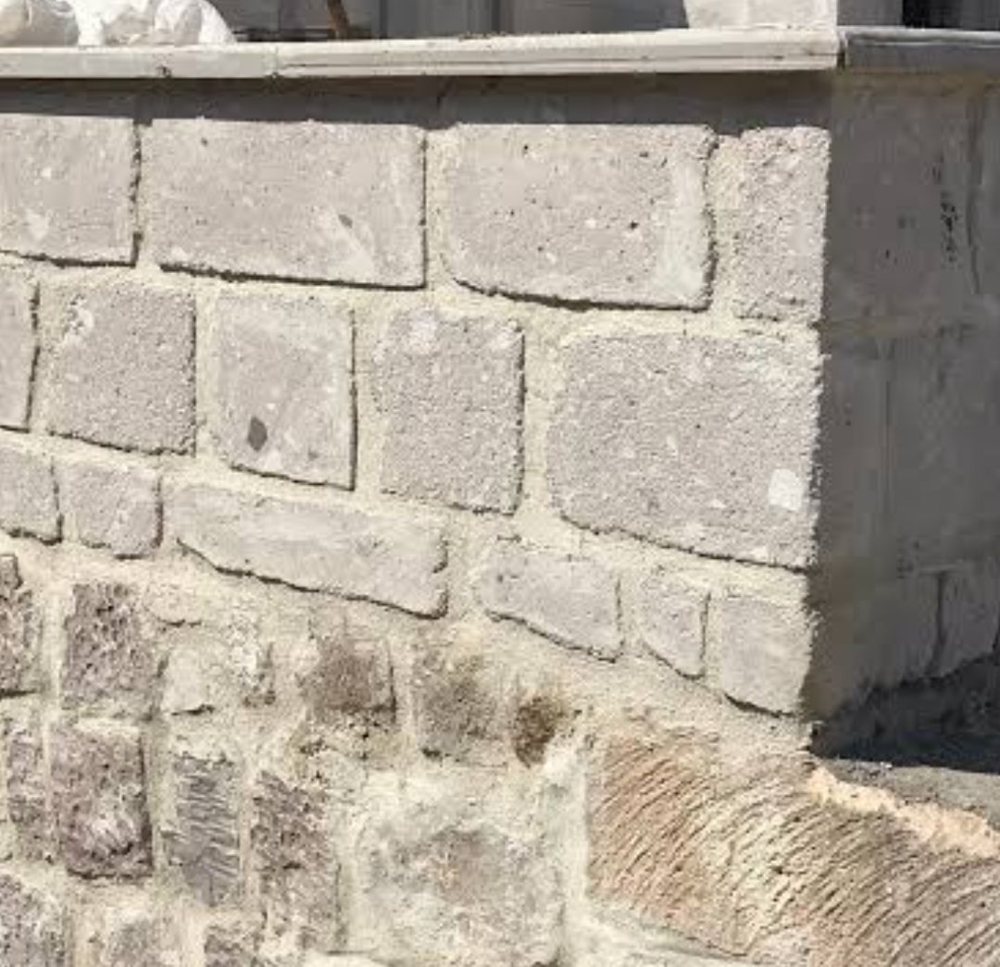
Köşe Detayı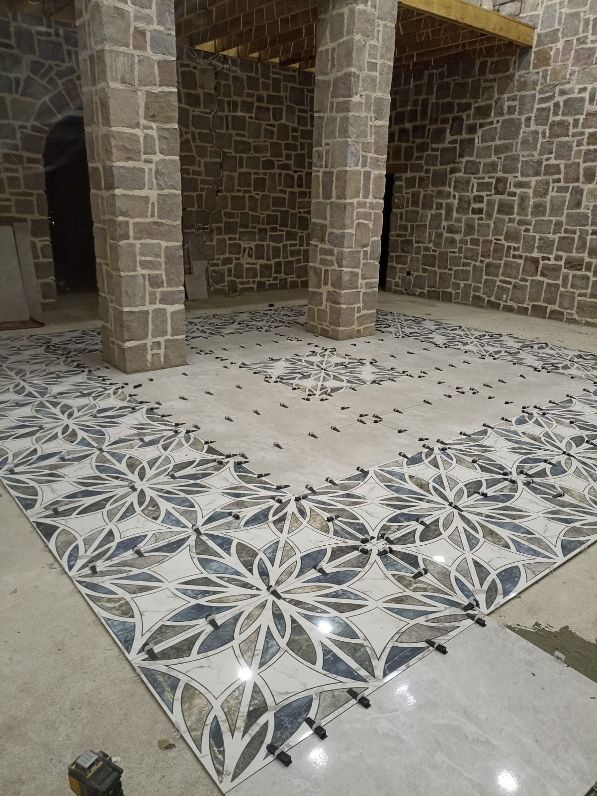
Zemin İşçiliği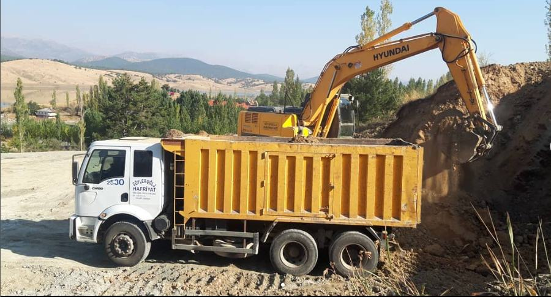
Güçlü Filo
Hidromek, Hyundai ve Hitachi ekskavatörlerimiz, kazıcı-yükleyicilerimiz, hidrolik kırıcı ataşmanlarımız ve damperli kamyon filomuzla her ölçekteki projeye hızlı ve etkin çözüm sunuyoruz.
Öne Çıkan Yetkinlik
Göksun'da toplu konut ve köy evi projelerinde, taşeron değil çözüm ortağı olarak yer alıyoruz — büyük ölçekli işlerde de güvenle çalışabilecek kapasiteye sahibiz.
Hafriyat, altyapı ve arazi düzenleme işlerinde; kamu kurumları, müteahhit firmalar ve özel sektör için sürdürülebilir, güvenilir ve zamanında teslim edilen çözümler üretiyoruz.
Sahadan Kareler
Göksun'un dağlık arazisinden köy evi şantiyelerine — gerçek sahalarımızdan gerçek kareler.
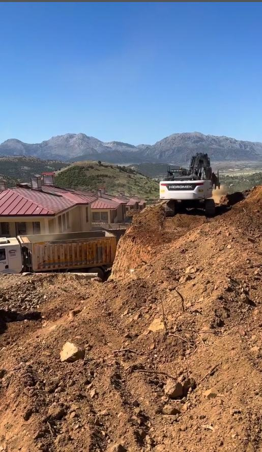
Köy Evleri Şantiyesi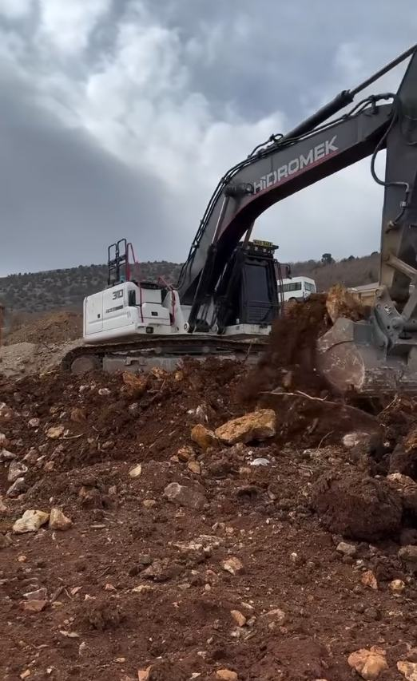
Hafriyat Kazısı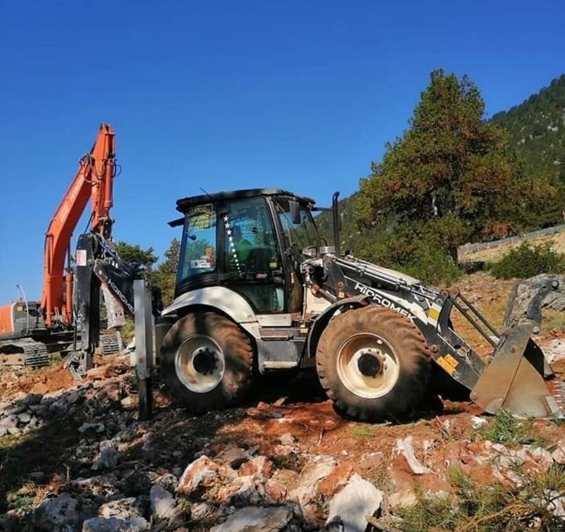
Kaya Kırıcı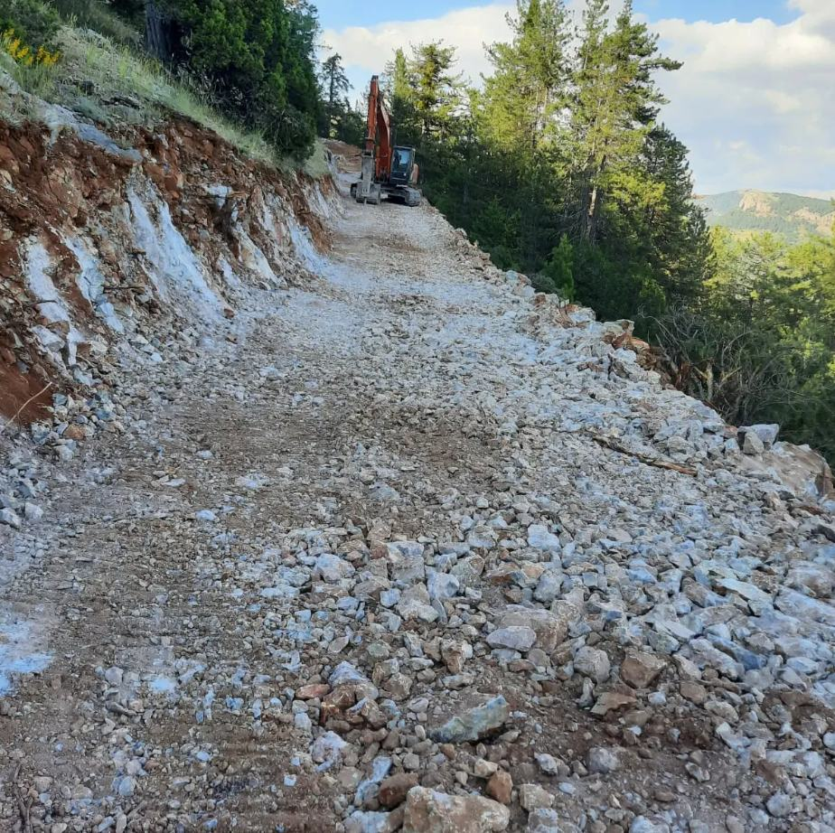
Dağ Yolu Açma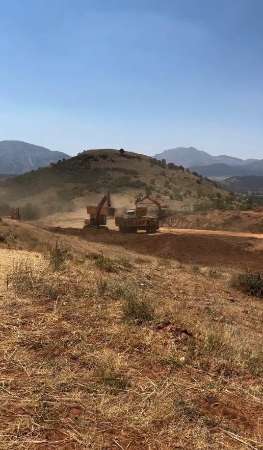
Büyük Ölçekli HafriyatSahadan Canlı Kareler
Makinelerimiz Göksun'un dağında, köy evi şantiyesinde ve hafriyat sahasında — gerçek görüntülerle.
Nasıl Çalışıyoruz
"Doğru plan, güvenli uygulama, zamanında teslimat." — her projede izlediğimiz beş adım.
Saha incelemesi ve ihtiyaç tespiti
İş programı ve makine planlaması
Sahada güvenli ve hızlı çalışma
Kalite ve güvenlik denetimi
Zamanında ve eksiksiz teslim
Kurumsal Ortaklık
Kamu kurumları, müteahhit firmalar ve özel sektör için sürdürülebilir, güvenilir ve uzun vadeli çözümler üretiyoruz.
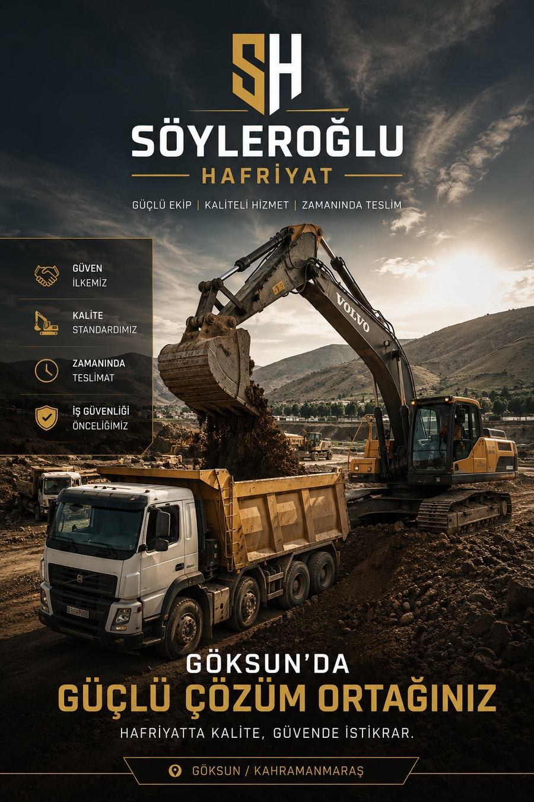
Hakkımızda
2007 yılından bu yana Göksun/Kahramanmaraş'ta faaliyet gösteriyoruz. 20 kişilik ekibimiz ve modern makine parkımızla; TOKİ toplu konut projelerinden köy evlerine, sanayi tesislerinden özel arazi işlerine kadar geniş bir yelpazede hizmet veriyoruz. Bölgenin arazi yapısını, iklimini ve inşaat dinamiklerini yakından tanıyor olmamız, her projede bize hız ve güvenilirlik kazandırıyor.
Kızılcık köyünde büyüdüm; bu toprağın taşını, dağını, yolunu bilirim. 2007'de küçük bir ekiple çıktığım bu yolda tek bir kuralım oldu: verdiğim sözü tutmak. Bugün Göksun'un dört bir yanında hafriyattan TOKİ şantiyelerine kadar yürüttüğümüz her işte, aynı köy terbiyesiyle çalışıyoruz — dürüst, sabırlı ve emek veren.
İletişim
Hafriyat, yıkım veya altyapı projeniz için bize ulaşın, en kısa sürede dönüş yapalım.
Cumhuriyet Mah., Mehmet Sağlam Blv. No:8
46610 Göksun / Kahramanmaraş